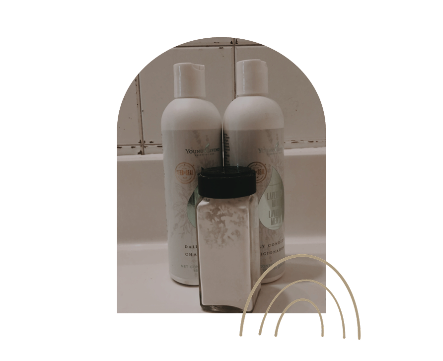
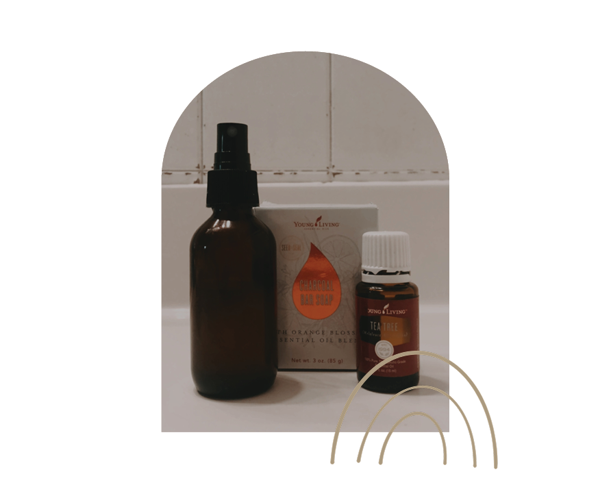
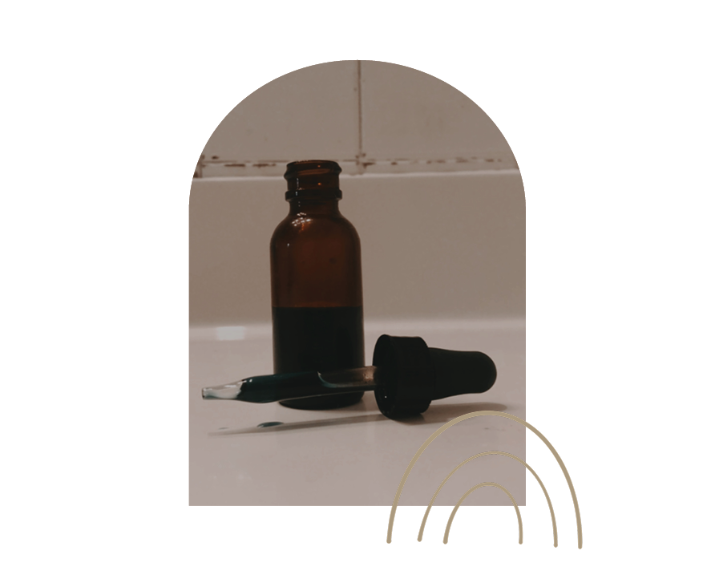

the way i start my day determines how my day goes, and i'm sure you can relate. so starting it off right with non-toxic products is where i begin! like i mentioned before, a majority of my products are essential oil based. some products i buy from youngliving, others i make myself. the best thing about oils is that they're highly concentrated, so each product i use is heavily diluted and lasts me a long time.
let's talk hair care.
i use young living's shampoo & conditioner, both of which are diluted with water. in between wash days, i use homemade dry shampoo. recipe: 1/4 cup cornstarch, 1 tbsp baking soda, 2 drops tea tree oil and 2 drops lavender. add a few tablespoons unsweetened cocoa powder for dark hair! apply to hair with a makeup brush.
prioritize yo face!
i wash my face with a charcoal bar morning and night. if i've been wearing makeup, i use coconut oil to wipe it off! a couple times a week, i'll use a homemade toner (witch hazel, apple cider vinegar + oils) to deep clean my face. for acne treatment, i'll put a spot of tea tree oil on breakout points.

glow baby glow
my all time favorite product i use is glow serum. my face moisturizer and saving grace, not only has it changed my skin, but i also get to absorb the health benefits of the oils morning and night! each ingredient is personalized to my skin, check out what i include and why!

your choice of deodorant is important!
another big switch i made was to non-toxic deodorant. deodorant often contains metals and aluminum that are extremely bad for our health. i made the switch to non-toxic deodorant a couple years ago, and is what i swear by changing if it's the only thing you do. i've tried a laundry list of them, here's the one i use now!
the one thing i have left to switch is makeup. non-toxic makeup can be pricier, and i wanted to finish up what i already owned, so i'm just now getting around to making the switch. i asked for makeup for christmas, so am hoping to be satisfied with all my products come 2021! i ordered from iliabeauty.com and w3llpeople.com but choose what's best for you and your budget!